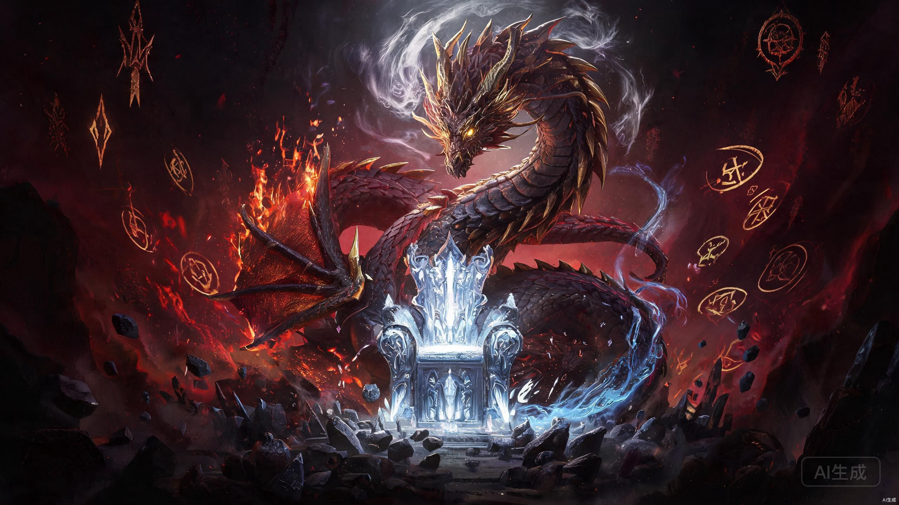
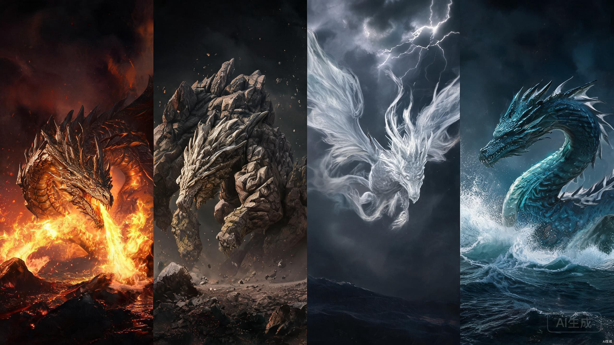

世界观设定

什么是言灵
言灵是龙族和混血种通过龙文引动规则之力的超自然能力。已知言灵共118种，可组成类似化学元素周期表的"言灵周期表"。序列号越大，威力越强、负担越重。
核心言灵一览
| 序号 | 名称 | 危险等级 | 效果 | 持有者 |
|---|---|---|---|---|
| 01 | 皇帝 | 绝密 | 所有言灵的开端。对领域内龙族和混血种造成绝对心灵震撼（龙威）。对纯人类和白王血裔无效 | 黑王尼德霍格、路明非（疑似） |
| 39 | 戒律 | 中阶 | 压制领域内血统比释放者低的龙族和混血种，使其无法使用言灵（龙王级除外） | 弗拉梅尔、路明非 |
| 59 | 镰鼬 | 低阶 | 构建大型领域，掌握范围内一切细小声音，增强听力。血统越纯领域越大 | 恺撒·加图索 |
| 69 | 冥照 | 低阶 | 扭曲光线（电磁波），造成隐身效果 | 酒德麻衣 |
| 71 | 吸血镰 | 中阶 | 镰鼬的升阶。召唤风妖以细小风刃攻击敌人 | 恺撒（暴血后） |
| 72 | 刹那 | 中阶 | 成倍提高自身速度，一阶2倍，二阶4倍，依此类推 | 犬山贺 |
| 81 | 无尘之地 | 中阶 | 以自身为中心释放强大气流排斥和阻挡周围物质 | 龙德施泰特教授、帕西·加图索 |
| 84 | 永恒/时间零 | 高阶 | 使时间流逝对使用者和选定者减慢，极其罕见的高阶言灵 | 昂热、楚天骄 |
| 89 | 君焰 | 危险 | 以自身为中心产生高温火焰和爆炸，可压缩增强威力 | 楚子航 |
| 91 | 王权 | 危险 | 控制领域内的重力 | 源稚生 |
| 110 | 黑炎牢狱 | 高危 | 领域内所有物质都被高温焚毁 | 白王·赫尔佐格 |
| 111 | 审判 | 高危 | 对领域内物体下达"死亡"命令，切割不被赦免的所有存在 | 上杉绘梨衣 |
| 113 | 莱茵 | 绝密 | 唯一一次被确认的释放导致了1908年"通古斯大爆炸" | 未知 |
| 114 | 烛龙 | 绝密 | 引发大爆炸，威力足以蒸干长江三峡水库 | 青铜与火之王·诺顿 |
| 117 | 湿婆业舞 | 绝密 | 经过无法打断的舞蹈后，毁灭包括释放者在内的领域范围内一切 | 大地与山之王 |
| 121 | 神谕 | 规则外 | 使白王血脉的龙族和混血种对言灵·皇帝免疫 | 白王 |
序列号不明的特殊言灵
| 名称 | 效果 | 持有者 |
|---|---|---|
| 黑日 | 沉默地燃烧领域内的一切 | 上杉越 |
| 白樱 | 日本混血种相关言灵 | 矢吹樱（关联） |
| 八歧 | 强行提升血统，获得八岐大蛇般完美身躯，近乎永生 | 源稚女 |
| 天演 | 强化大脑运算速度，将大脑变成高性能计算机 | 古德里安 |
| 镜瞳 | 快速解析事物并掌握使用方法 | 零 |
| 梦貘 | 制作梦境 | 源稚女 |
| 青铜御座 | 增强肌肉力量，使肌肉坚硬如青铜 | 芬格尔 |
| 君王 | 暂时令他人不得不臣服于释放者 | 楚子航 |

龙族始祖：黑王尼德霍格
地位：所有龙类共同的祖先，至尊至力至德的存在。以言灵和炼金术统治世界，领域曾覆盖整个欧洲乃至部分亚洲。
创造：创造了白王和四大君主，竖起青铜柱建造龙族城市。
命运：数千年前被四大君主联合人类杀死在王座上，临死前预言归来。他的陨落是龙族由盛转衰的转折点。
言灵：皇帝（序列01）
至高神性：白王
地位：仅次于黑王的最强龙类，由黑王创造。掌管精神元素，拥有复制四大君主言灵的能力。
叛乱：约公元前10000年发动"诸神黄昏"，带走三分之一龙族。被镇压后钉在青铜柱上，冰封折磨六个纪元，最终被丢入火山化为灰烬。
遗产：临死前将圣血和圣骸赐予人类伊邪那岐，成为白王血裔始祖。日本蛇岐八家即为白王血裔后裔。
新生白王：赫尔佐格通过实验窃取白王之力，拥有言灵·黑炎牢狱(110)。
四大君主
四大君主均由黑王创造，掌管地、水、风、火四大元素。均为双生子结构——"权"代表智慧与策略，"力"代表纯粹的力量。
铸造了著名的炼金武器"七宗罪"。汉朝时化名李熊辅佐公孙述称帝，使用言灵·烛龙毁灭白帝城，在三峡重铸青铜城。
双生子
诺顿（权）：代表智慧。2010年被路明非第一次交易后击杀于三峡。
康斯坦丁（力）：诺顿之弟。2009年死于卡塞尔学院。
明朝苏醒时造成王恭厂大爆炸（1626年）。耶梦加得化名夏弥混入人类世界，与楚子航产生纠葛。芬里厄吞噬妹妹后融合为更强形态。
双生子
耶梦加得/夏弥（权）：代表智慧。2010年被楚子航杀死。
芬里厄（力）：吞噬妹妹后成为完整龙王。被路明非杀死。
镰鼬、吸血镰、阴雷、风王之瞳等风系言灵均源自其血脉。1900年"夏之哀悼"事件中进攻卡塞尔庄园。
双生子
李雾月（确认）：初代种，西夏皇帝李元昊之弟。1900年与梅涅克·卡塞尔同归于尽。
奥丁（推测）：出现在龙族IV中，与楚子航相关。是否为此龙尚待确认。
小说中着墨最少的龙王。言灵·归墟（115，引发巨大海啸）推测源自其血脉。具体信息在已出版内容中披露有限。
双生子
利维坦（确认）
黑蛇（暂定）：信息尚未完全确认。
什么是混血种
混血种由人类女性与龙类生育的后代。血统等级并非单纯由龙族血统比例决定，而是由"优秀基因含量"决定，通过与龙文共鸣的程度来体现。龙族血统比例超过50%即为"临界血限"，进入纯血龙类的范畴。
混血种血统从低到高分为F、E、D、C、B、A、S七个等级。此外还可通过"暴血"秘术暂时提升基因层次（最高4层），但会加速被龙血侵蚀。
血统等级详解
拥有超过临界血限的龙血比例，极为罕见。路明非是卡塞尔学院唯一的S级在读学生。他的力量源于未知回溯经验与龙王意识残留，不适用常规序列评级。
仅次于S级的高纯度血统，通常拥有高阶言灵或可通过"暴血"提升。实战能力极强，是学院中的精英层。
通过"暴血"秘术突破A级限制，达到超A级。拥有极强大的实战能力，但暴血会加速龙血侵蚀，使用次数有限。
血统纯度足以形成完整的言灵领域，有较强实战能力。多数执行部成员处于此等级。
能稳定释放言灵，保留一定龙族特征，是较常见的等级。中级混血种的核心力量。
能初步感知和使用微弱言灵，血统开始有所体现但实战能力有限。
龙族血统极低，龙族特征几乎不显现。E级处于未觉醒状态，F级能力几乎可以忽略。
表面评级最低，但实际可能是特殊伪装。芬格尔被评为G级却隐藏着惊人的实力和秘密。
创世纪 · 远古时代
古代史 · 龙族与人类
近代史 · 学院时代
现代史 · 故事正篇
什么是尼伯龙根
尼伯龙根（Nibelheim）是龙族系列中龙王级龙类创造的异空间，源于北欧神话中的"雾之国"。每个尼伯龙根都有一位主人，空间内的规则由主人的意志决定。
尼伯龙根与现实世界重叠又隔离，只有特定的入口才能进入。在尼伯龙根中，龙类可以发挥出远超现实世界的战力，而人类则会受到不同程度的压制。
已知的尼伯龙根
| 名称 | 主人 | 位置 | 特征 | 状态 |
|---|---|---|---|---|
| 青铜城 | 诺顿（青铜与火之王） | 长江三峡水底 | 青铜铸造的炼金城市，布满机关和炼金矩阵 | 部分坍塌 |
| 北京地铁尼伯龙根 | 耶梦加得/芬里厄 | 北京地铁系统深处 | 无尽的地下迷宫，生物被龙文侵蚀异化 | 已毁灭 |
| 奥丁之渊 | 奥丁（疑似天空与风之王） | 不定 · 与高架桥关联 | 时间错乱，存在抹消能力，与现实交错的异空间 | 活跃 |
| 红井 | 蛇岐八家/赫尔佐格 | 东京 · 蛇岐八家地下 | 白王圣骸沉睡之地，最深处的禁地 | 已毁 |
| 高天原 | 白王血裔 | 日本海沟深处 | 古代龙族遗迹，白王圣骸的原始封印地 | 沉没 |
| 卡塞尔庄园遗址 | 无（已废弃） | 德国汉堡附近 | 1900年"夏之哀悼"发生地，仍残留强烈的龙族元素波动 | 废墟 |
尼伯龙根的规则
- 每个尼伯龙根只有一位主人，主人可以在空间中制定规则
- 进入尼伯龙根需要特定的"钥匙"或满足条件（如特定时间、地点、血统）
- 尼伯龙根中的时间流速可能与现实世界不同
- 在尼伯龙根中死亡，现实世界也会死亡
- 龙王级龙类可以创造尼伯龙根，普通混血种只能进入不能创造
- 尼伯龙根会随着主人的死亡而逐渐崩溃
- 多个尼伯龙根之间可能存在通道，连接不同的异空间
尼伯龙根与神话
龙族系列中的尼伯龙根设定深受北欧神话和克苏鲁神话的影响。在北欧神话中，尼伯龙根（Niflheim）是九大世界之一，是雾与寒冷的国度，也是死亡女神海拉的领域。
在克苏鲁神话中，异空间的概念被广泛使用——不可名状的恐怖往往来自人类无法理解的维度。龙族中的尼伯龙根借鉴了这一设定，将其与龙族文明的辉煌历史结合起来。
每个尼伯龙根都是龙王意志的延伸，反映了主人的性格和力量属性。诺顿的青铜城体现了他的炼金术造诣，耶梦加得的尼伯龙根体现了她的诡秘与深沉，而奥丁的领域则体现了他的神秘与不可捉摸。
混血种社会概述
混血种社会是一个隐藏在人类文明背后的秘密世界。他们拥有龙族血统，却生活在人类社会中，守护着一个不为人知的使命——屠龙。
混血种社会有着自己的等级制度、权力结构和文化传统。他们通过古老的家族传承血脉，通过学院培养新一代的屠龙战士，通过秘党协调全球的屠龙行动。
血统等级制度
| 等级 | 特征 | 典型人物 | 在社会中的地位 |
|---|---|---|---|
| S级 | 龙族血统极度浓郁，可能觉醒龙化能力，言灵潜力极高 | 路明非、昂热、路麟城、乔薇尼 | 极度稀有，被视为救世主或灾难的预兆 |
| A级 | 血统优秀，可使用高阶言灵，身体素质远超常人 | 楚子航、凯撒、诺诺、零 | 精英阶层，通常担任重要职务或家族继承人 |
| B级 | 血统良好，可使用中阶言灵，能力稳定可靠 | 大多数执行部专员 | 中坚力量，构成混血种社会的主体 |
| C/D/E级 | 血统较弱，言灵能力有限或不稳定 | 普通学生、后勤人员 | 基层成员，从事辅助性工作 |
| G级 | 表面评级最低，但可能隐藏特殊能力或身份 | 芬格尔 | 神秘的存在，真实实力成谜 |
混血种社会的权力结构
由最古老的混血种家族代表组成，掌握最高决策权。元老会决定秘党的战略方向、重大行动和资源分配。
元老会成员多为数百岁的老怪物，拥有深不可测的实力和智慧。他们隐藏在世界各地，通过代理人执行决策。
卡塞尔学院的最高管理机构，由各大家族代表组成。负责学院的日常运营、招生、任务审批等。
校董会虽然名义上管理学院，但实际上受到秘党元老会的制约。各家族在校董会中的话语权取决于其历史和实力。
秘党的武装力量，负责执行屠龙任务、情报收集和危机处理。执行部成员多为A级和B级混血种。
执行部在全球设有分部，随时待命处理龙族相关事件。他们是混血种社会中最危险的职业。
负责龙族文献翻译、炼金术研究、言灵分析等技术工作。研究人员通常不是战斗人员，但拥有不可替代的专业知识。
弗拉梅尔副校长领导的炼金术研究是其中最重要的分支，他们开发的新型武器和道具是执行部战斗的重要保障。
混血种社会的隐秘法则
- 隐匿法则：混血种必须隐藏自己的身份和能力，不得向普通人类暴露龙族世界的存在
- 血统纯洁法则：大家族重视血统的纯洁性，通常只在混血种内部通婚
- 龙族优先法则：面对龙族威胁时，所有个人恩怨和家族矛盾都必须让位于屠龙使命
- 茧化保护法则：发现龙王茧化之地时，必须立即上报并采取措施，不得私自处理
- 言灵保密法则：高阶言灵的使用和传授受到严格管控，危险言灵被列为禁术
- 遗物分配法则：屠龙获得的龙骨十字等遗物由校董会统一分配，不得私藏
- 堕落者清除法则：血统失控或背叛人类的混血种被视为"堕落者"，必须被清除
混血种与人类的共存
混血种社会与人类社会的关系微妙而复杂。一方面，混血种隐藏在人类社会中，利用人类的资源和科技；另一方面，他们守护着人类免受龙族威胁，是无声的守护者。
随着现代科技的发展，混血种社会面临新的挑战。卫星、互联网、社交媒体使得隐匿变得越来越困难。如何在信息时代继续保持隐秘，是混血种社会面临的重要课题。
此外，混血种内部对于与人类关系的看法也存在分歧。保守派主张严格隔离，激进派认为应该利用混血种的力量主导人类社会，而温和派则主张维持现状，继续守护。
势力与组织
龙族世界中存在着多个相互关联又彼此对立的势力，它们共同构成了这个黑暗奇幻世界的权力格局。
位于美国伊利诺伊州芝加哥的混血种高等教育机构，表面是一所古怪的私立大学，实际上是全球最强的屠龙战士培养基地。
学院拥有世界最先进的炼金术研究室、武器库和情报系统。学生分为不同血统等级，毕业后多进入执行部工作。学院的校训是"以屠龙为荣誉"。
核心设施包括图书馆（藏有炼金术古籍）、冰窖（存放龙骨十字和稀有炼金物品）、教堂（弗拉梅尔的炼金术工坊所在地）等。
关键人物
昂热（校长） 弗拉梅尔（副校长） 古德里安 施耐德 曼斯 诺玛/EVA一个古老而秘密的混血种联盟，其历史可追溯至约公元前4000年。秘党致力于消灭龙族、保护人类文明，是卡塞尔学院背后的真正掌控者。
秘党拥有庞大的情报网络和资源，在全球各地设有分支机构和混血种家族。各家族之间既有合作也有权力博弈。加图索家族是秘党中最显赫的家族之一。
秘党的核心信条是"以人类之名，诛杀龙族"，每一位成员都发誓为这一目标献出自己的生命。
关键人物
昂热（核心领袖） 恺撒·加图索 帕西·加图索 酒德麻衣卡塞尔学院下属的实战执行部门，也是秘党的尖刀力量。执行部专员负责追踪、调查并消灭龙类和死侍，执行全球最危险的屠龙任务。
执行部分为多个小队，每个小队由血统等级较高的专员组成。任务类型包括：龙王讨伐、遗迹探索、死侍清除、混血种犯罪调查等。
执行部拥有独立的情报系统和装备库，专员标配炼金武器、龙文翻译设备和防护装备。在执行任务时，专员拥有极大的自主权和强制权限。
关键人物
施耐德（教授/导师） 曼斯·龙德施泰特（已故） 叶胜（已故） 酒德亚纪（已故） 楚子航 酒德麻衣卡塞尔学院中历史最悠久的学生组织，成立于1896年，其前身是梅涅克·卡塞尔领导的"狮心会"。狮心会在1900年"夏之哀悼"事件中被团灭，后在学院重建。
狮心会成员以实战能力和执行力著称，成员多为高血统等级的战斗型人才。狮心会的传统是"永不后退"，每一位成员都以勇猛和忠诚闻名。
楚子航任会长期间，狮心会成为学院中最强大的学生组织之一，与学生会形成竞争关系。
关键人物
楚子航（会长） 梅涅克·卡塞尔（创始人，已故） 苏茜 芬格尔卡塞尔学院中另一大学生组织，由加图索家族继承人恺撒创立并担任会长。学生会以社交、资源和影响力见长，与狮心会的战斗风格形成鲜明对比。
学生会成员多为混血种家族子弟，拥有丰富的社会资源和广泛的社交圈。学生会举办的派对和社交活动是学院中最盛大的场合。
学生会和狮心会之间既是竞争对手，也是生死与共的战友。在危急时刻，两大组织会放下分歧，共同面对龙族的威胁。
关键人物
恺撒·加图索（会长） 路明非（前主席/名誉会长） 诺诺（副主席） 零日本最大的混血种家族组织，也是白王血裔的后裔。蛇岐八家分为内三家和外五家，内三家掌握着家族的最高权力，其中上杉家尤为特殊。
蛇岐八家与卡塞尔学院有合作关系（日本分部），但内部事务保持高度自治。家族的最高领袖被称为"皇"，拥有远超普通混血种的龙族血统。
蛇岐八家的核心秘密与白王圣骸有关，历代"皇"都承担着守护或封印圣骸的使命。家族的宿命与龙族的终极命运紧密相连。
关键人物
源稚生（少主/皇） 源稚女/风间琉璃 上杉绘梨衣（上杉家主） 上杉越（前上杉家主） 矢吹樱猛鬼众是蛇岐八家的对立面，由那些血统不稳定、濒临龙化的混血种组成。他们自称"鬼"，被蛇岐八家视为家族耻辱和威胁，长期遭到追杀和镇压。
猛鬼众的首领是风间琉璃——源稚生的双胞胎弟弟源稚女的另一人格。在赫尔佐格的操纵下，源稚女被培养成完美的杀手和舞者，他的双重人格在善恶之间摇摆。
猛鬼众的终极目标是推翻蛇岐八家的统治，解放所有被压迫的"鬼"。然而，他们实际上也是赫尔佐格阴谋中的棋子，被利用来制造混乱，为白王圣骸的觉醒创造条件。
关键人物
风间琉璃（首领） 源稚女（真实身份） 王将（赫尔佐格伪装） 樱井小暮加图索家族是秘党中最显赫、最古老的家族之一，其历史可以追溯到罗马帝国时期。家族以雄厚的财力、广泛的政治影响力和优良的血统传承著称。
加图索家族长期掌控着卡塞尔学院的校董会，对学院重大决策拥有否决权。家族的继承人恺撒·加图索是学院中最耀眼的学生之一，拥有极高的血统纯度和强大的言灵·吸血镰。
然而，加图索家族也被一种神秘的诅咒笼罩——历代家族成员都英年早逝，且死法离奇。这个诅咒与龙族血脉的某种缺陷有关，也可能是某种远古誓言的代价。
关键人物
恺撒·加图索（继承人） 庞贝·加图索（家主） 帕西·加图索（秘书） 弗罗斯特（校董）卡塞尔学院的最高权力机构，由秘党各大家族的代表组成。校董会负责制定学院的战略方向、审批重大任务、管理龙骨十字等核心资源。
校董会成员多为血统高贵、资历深厚的混血种元老。他们对昂热校长的某些激进做法常有异议，但在面对龙族威胁时，校董会通常会支持校长的决策。
校董会的核心议题之一是龙骨十字的分配和使用。龙骨十字蕴含着龙王的全部力量和记忆，是各大家族争夺的终极资源。校董会的平衡术在很大程度上决定了秘党内部的权力格局。
关键人物
昂热（校长/代表） 伊丽莎白（洛朗家族） 弗罗斯特（加图索家族） 图灵先生 道格先生关键地点
炼金术与科技
龙族世界中融合了古老炼金术与现代科技的独特造物，是混血种对抗龙族的关键力量，也是龙族文明的智慧结晶。
青铜与火之王诺顿铸造的七柄炼金武器，分别以七宗罪命名。每一柄都对应一种罪孽，也对应一种特定的龙类血统弱点。
七宗罪分别是：傲慢（太刀）、嫉妒（直刀）、暴怒（阔刀）、懒惰（短刀）、贪婪（斩马刀）、暴食（肋差）、色欲（匕首）。
七柄刀插在铜柱上，只有血统足够高贵的人才能拔出。路明非在关键时刻拔出了太刀·傲慢，成为其标志性武器。
特性
材质：炼金秘银合金 · 对龙类伤害加成 · 可吸收龙血进化 · 寄宿部分诺顿权能
暴血是一种通过提升龙族血统比例来增强力量的炼金秘术，由狮心会创始人梅涅克·卡塞尔从龙族古籍中发掘。
暴血分为四层，每一层都大幅提升言灵威力和身体素质，但代价是加速龙血侵蚀——使用者的身体会逐渐龙化，最终失去理智变为死侍。
楚子航是暴血术的高频使用者，而路明非的暴血来自路鸣泽的馈赠，副作用相对较小。暴血状态下，瞳孔会变为黄金瞳，皮肤出现龙鳞纹路。
风险
每层暴血增加龙化风险 · 极限4层 · 不可逆的基因侵蚀 · 可能永久失去人类形态
龙王死亡后留下的完整骨骼，呈十字形姿态。龙骨十字是龙族力量的终极结晶，蕴含着龙王的全部记忆和权能。
秘党将龙骨十字视为最高机密，卡塞尔学院的冰窖中存放着康斯坦丁的龙骨十字。龙骨十字是炼金术的最高造物，也是研究龙族文明的钥匙。
传说中，如果能集齐所有龙王的龙骨十字，就能召唤黑王归来。这也是秘党与混血种家族暗中争夺的终极目标之一。
已知龙骨
康斯坦丁（冰窖） · 诺顿（下落不明） · 耶梦加得/芬里厄（未知） · 白王（被毁）
诺顿在三峡水下重铸的青铜城，是龙族炼金术的巅峰之作。整座城市由青铜铸造，内部布满了炼金矩阵和机关。
青铜城的核心是一个巨大的炼金反应炉，能够提取地脉之力。诺顿和康斯坦丁的茧就安置在青铜城的最深处，由龙文封印保护。
青铜城内部还有自毁机关和幻觉陷阱，可以在没有守军的情况下抵御入侵者。曼斯教授带领的团队在探索青铜城时付出了惨重代价。
位置
中国长江三峡水底 · 深度约200米 · 被龙文结界保护 · 已随诺顿之死部分坍塌
卡塞尔学院的超级计算机系统，由诺玛和EVA两个子系统组成。诺玛是学院的日常管理系统，而EVA是昂热私有的最高权限AI。
EVA的AI核心基于上一位EVA（一位牺牲的混血种女性）的大脑扫描数据构建，拥有近乎人类的判断力和情感模拟能力。
EVA掌控着全球混血种的情报网络，能入侵绝大多数民用和军用系统。在东京任务中，EVA多次为路明非等人提供关键情报和战术支援。
能力
全球情报监控 · 卫星定位 · 战术分析 · 加密通信 · 防火墙等级：S级绝密
白王临死前赐予人类伊邪那岐的圣血和圣骸，是白王力量的载体。圣骸沉入日本海沟后，被蛇岐八家世代守护和封印。
圣骸拥有寄生能力，可以附着在混血种身上，使其逐步进化为白王。源稚女和上杉绘梨衣都曾被选中作为圣骸的容器。
赫尔佐格经过数十年的研究，最终在红井中成功窃取圣骸之力，以绘梨衣的血液为祭品，进化成新白王。但最终被路明非以四分之一生命的代价击杀。
状态
已被销毁 · 白王之力随赫尔佐格死亡而消散 · 圣骸核心被审判言灵切割
龙王图鉴
龙族世界中至高无上的存在，每一位龙王都掌控着一种元素的终极权能，是混血种面临的最高级别威胁。
龙族的始祖和至高统治者，被称为"绝望之龙"。传说中他拥有无尽的力量和智慧，创造了所有龙族和混血种。
黑王的力量超越了所有其他龙王的总和，他的言灵·皇帝（序列01）对所有龙族和混血种具有绝对的统治力。只有白王血裔能够免疫他的龙威。
传说黑王已经死去，但他的归来预言一直笼罩着整个世界。路明非的身份之谜，最终可能指向黑王本人——或是他的继承者。
权能
言灵·皇帝 创造四大君主 绝对统治权 不死不灭（传说）龙族中唯一能与黑王并肩的存在，掌控精神元素。白王拥有操控心灵和精神的恐怖能力，是龙族中最神秘的存在。
白王曾发动叛乱对抗黑王，最终失败被处以"六界封印"。但他的血裔——蛇岐八家——一直延续至今。白王圣骸是龙族世界中最重要的遗物之一。
赫尔佐格窃取圣骸之力后化身新白王，展现了毁天灭地的力量。这证明了白王的权能即使经过漫长岁月，依然不可小觑。
权能
精神操控 心灵控制 言灵·神谕 六界封印四大君主之一，掌控火焰与金属的至高权能。诺顿与康斯坦丁是孪生兄弟，分别代表青铜与火之王的两种形态。
诺顿化名李熊辅佐公孙述（真实历史人物），是龙族中对中国历史影响最深的龙王。他在三峡水下重铸了青铜城，作为自己和弟弟的茧化之地。
诺顿的言灵·烛龙是已知最强大的攻击型言灵之一，威力足以蒸干整条长江。他铸造的七宗罪是龙族世界中最顶级的炼金武器。
权能
言灵·烛龙 炼金术巅峰 火焰与金属 七宗罪铸造者四大君主之一，掌控大地与山脉的至高权能。耶梦加得与芬里厄是孪生兄妹，妹妹化身为人类夏弥潜伏于卡塞尔学院。
耶梦加得是龙族中最聪明的存在，她深谙人心，甚至让自己也陷入了对楚子航的复杂情感中。最终她选择被哥哥芬里厄吞噬，成为完整的大地與山之王。
大地与山之王拥有控制地震、山脉和地脉的力量，其言灵能引发毁灭性的地质灾难。
权能
地震控制 山脉操控 地脉之力 化形为人类四大君主之一，掌控海洋与水流的至高权能。海洋与水之王目前尚未在正篇中完全苏醒，但其力量已通过诸多遗迹和传说展现。
传说中，海洋与水之王沉睡在世界上最深的海沟中，其茧被万吨海水保护。当这位君主苏醒时，可能引发席卷全球的海啸和洪水。
亚特兰蒂斯、百慕大三角等人类未解之谜，据说都与这位龙王的活动有关。
权能
海啸召唤 水流控制 深海统治 冰霜之力四大君主之一，掌控天空与风暴的至高权能。天空与风之王同样尚未在正篇中完全展现真身，但其存在一直笼罩着龙族世界。
有理论认为，神秘的奥丁可能就是天空与风之王的化身或代理人。奥丁掌握的存在抹除能力，与风元素的"无处不在却又无形"的特性高度吻合。
当这位君主完全苏醒时，可能带来席卷全球的飓风、雷暴和毁灭性的气象灾难。
权能
飓风召唤 雷电控制 天空统治 存在抹除（疑似）龙王血脉谱系
自黑王尼德霍格起，向下梳理白王与四大君主的血脉分支、孪生共治关系，以及它们在人间留下的代理与后裔。点击节点可展开或收起下级分支，悬停查看权能说明。
混血种家族谱系
龙族世界中传承千年的混血种家族，他们隐藏在人类文明背后，守护着屠龙使命，也争夺着龙族遗留的权与力。
秘党中最显赫、最古老的家族，历史可追溯到罗马帝国时期。家族拥有庞大的财力、政治影响力和优良的血统传承。
加图索家族长期掌控卡塞尔学院校董会，是混血种世界中的顶级权贵。但家族也被一种神秘诅咒笼罩——历代成员多英年早逝。
现任继承人为恺撒·加图索，他的血统纯度和领导才能被视为家族复兴的希望。
家族成员
恺撒·加图索 庞贝·加图索（家主） 帕西·加图索 弗罗斯特（校董）法国最古老的混血种家族之一，与加图索家族并列为秘党的核心力量。洛朗家族以优雅、智慧和战略眼光著称。
家族现任代表为伊丽莎白·洛朗，她是卡塞尔学院校董会中最年轻的成员，以敏锐的政治嗅觉和冷静的判断力闻名。
洛朗家族在情报和外交方面拥有独特优势，与欧洲各国政府保持着微妙的联系。
家族成员
伊丽莎白·洛朗 家族长老团蛇岐八家内三家之一，也是最为特殊的家族。上杉家世代传承着白王血裔的纯正血统，家族成员拥有远超普通混血种的力量。
上杉家最著名的成员是上杉越和上杉绘梨衣。上杉越是前任家主，用自己的基因创造了三个试管婴儿后代。绘梨衣则拥有审判级言灵，是蛇岐八家最重要的战斗力。
上杉家的宿命与白王圣骸紧密相连，历代家主都承担着守护或封印圣骸的使命。
家族成员
上杉绘梨衣 上杉越（前家主） 源稚生（关联）蛇岐八家内三家之首，掌握着家族的最高权力。源家代代传承"皇"的称号，拥有蛇岐八家中最纯正的血统和最强大的力量。
源稚生作为源家的代表，是蛇岐八家的现任"皇"。他的言灵·王权可以控制领域内的重力，是极其稀有的高阶言灵。
源家与上杉家有着深厚的渊源，源稚生、源稚女和绘梨衣三人实际上是同一基因的不同产物。
家族成员
源稚生（皇） 源稚女/风间琉璃 矢吹樱（家臣）蛇岐八家外五家之一，以情报网络和商业帝国著称。犬山家控制着日本最大的情报机构，在东京拥有广泛的影响力。
犬山家的前任家主犬山贺是昂热的老朋友，他的言灵·刹那可以成倍提升自身速度，是极为罕见的时间系言灵。
犬山家在蛇岐八家中扮演着"耳目"的角色，其情报网络甚至渗透到了普通人类社会。
家族成员
犬山贺（前家主） 犬山家情报网络路明非出身的家族，表面上是一个普通的中国家庭，实际上隐藏着惊天的秘密。路明非的父母路麟城和乔薇尼都是S级混血种。
路氏家族可能是龙族世界中最为神秘的存在。路明非的S级血统、与路鸣泽的羁绊、以及他体内那股足以击杀龙王的恐怖力量，都暗示着这个家族与龙族始祖有着某种深层联系。
有理论认为，路明非可能是黑王尼德霍格的转世或继承者，而路鸣泽则是他体内觉醒的龙族人格。
家族成员
路明非 路麟城（父亲） 乔薇尼（母亲） 路鸣泽（？）武器图鉴
龙族世界中的致命武器，从炼金刀剑到七宗罪，每一件都承载着屠龙者的使命。
七宗罪中最锋利的一柄，代表着傲慢这一原罪。只有血统最纯净、内心最强大的混血种才能拔出它。
路明非在第一次交易中曾短暂握住傲慢，感受到了其中蕴含的毁灭性力量。
昂热校长随身携带的折刀，刀身由炼金秘银打造，刀柄镶嵌着贤者之石。陪伴昂热超过一个世纪，见证了无数屠龙之战。
配合言灵·时间零使用时，可以发挥出惊人的杀伤力，曾刺穿过龙王的鳞片。
七宗罪中体型最巨大的一柄，代表着暴食。刀身宽厚，可劈开龙类的青铜铠甲。
在对抗龙王时，暴食往往作为主力输出武器，其破坏力足以与龙王的力量抗衡。
卡塞尔学院执行部标配的炼金子弹，弹头由炼金秘银和龙骨粉末混合铸造。可以穿透龙类的鳞片，对死侍有极强的杀伤力。
每颗子弹的成本相当于一辆普通轿车，只有面对高阶目标时才会被授权使用。
装备部改良的炼金燃烧弹，内部装有高纯度龙血提取物。爆炸后可以产生持续燃烧的白色火焰，对龙类和死侍有极强的杀伤力。
在青铜城探险和东京任务中都发挥了关键作用。
恺撒的言灵·镰鼬能够召唤出无形的镰刀，可远程收割生命。在东京任务中，恺撒以吸血镰言灵进行远程支援，展现出惊人的控制力。
镰鼬并非实体武器，而是由风元素构成的攻击手段，但杀伤力不亚于实体刀剑。
✨ 内容更新中心
选择要更新的内容类别，系统将自动向对应版块添加新内容